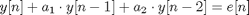
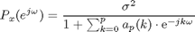
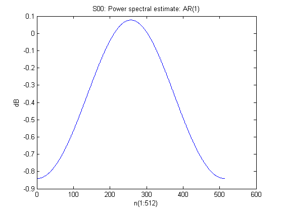
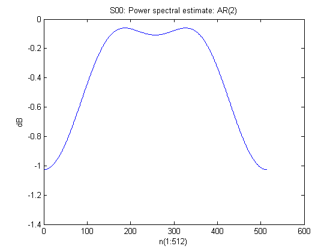
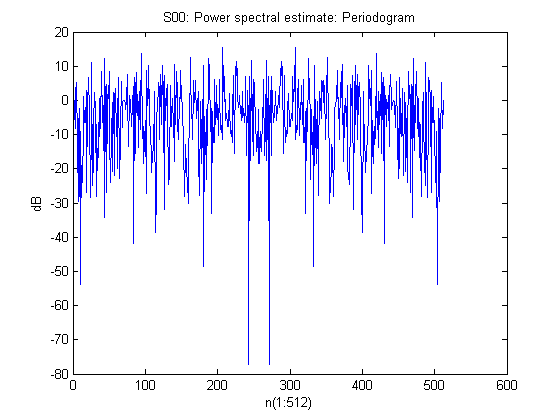

EE779 Computing Assignment 2 Q1 S00
Ashwin Kachhara, 10d070048
Contents
Reading the signal S00 from the DAT file
S = getdata('assgn1_data/S00.DAT');
a) Estimation of the correlation matrix
N = length(S);
Because we need a 3x3 correlation matrix, the order of the AR model is 2
p = 2; r=zeros(p+1, 1); for i=0:p, r(i+1) = S(1:N-i)*S(i+1:N)'/N; end
After calculating the autocorrelation sequence, we can simply plug these values in to obtain the 3x3 Toeplitz correlation matrix, R33
R33 = [r(1) r(2) r(3); r(2) r(1) r(2); r(3) r(2) r(1)]
R33 =
0.9584 -0.0506 -0.0175
-0.0506 0.9584 -0.0506
-0.0175 -0.0506 0.9584
b) Yule-Walker Method
We use the matrix R33 to solve the corresponding Yule-Walker equations. We obtain the linear coefficients of the AR model and the estimated variance of the error function
R331=R33(2:end, 2:end); a33 = zeros(p,1); a33 = -inv(R331)*r(2:end)
a33 =
0.0539
0.0211
We prepend a33 with unity to get a vector a331 which gives us much more computational convenience
a331 = [1;a33];
The predicted error variance comes out to be:
var33th = a331'*r
var33th =
0.9553
c) Actual Error Variance
We will need to apply the filter to the data, and using the difference equation, we can compute the error function.
Diff eqn: 
e33=zeros(N,1); e33(1) = S(1); e33(2) = S(2) + a33(1)*S(1);
Now that we have set the initial conditions, we can calculate the error function
for i=3:N, e33(i) = S(i) + a33(1)*S(i-1) + a33(2)*S(i-2); end
The computed error variance comes out to be:
var33pr = var(e33)
var33pr =
0.9565
It compares quite well to the theoretical error variance
d) First order linear predictive model
First we extract a 2x2 block out of the previous matrix R33 and name it as R22. This corresponds to the YW equations of the first order model. Now we repeat the same procedure as before i.e. solving the YW equations for the model parameters and theoretical error variance and then we will calculate the actual variance for comparison to the theoretical estimate.
R22 = R33(1:2, 1:2);
First order AR model parameter
a22 = -r(2)/R22(2,2) a221 = [1;a22];
a22 =
0.0528
Theoretical estimate of error variance
var22th = a221'*r(1:2)
var22th =
0.9557
e22=zeros(N,1); e22(1) = S(1); for i=2:N, e22(i) = S(i) + a22*S(i-1); end
Actual value of error variance (using difference equation)
var22pr = var(e22)
var22pr =
0.9570
e) AR Power Spectral estimate | 1st order model
Power spectrum is estimated using the following equation  Where p is the order of the filter and numerator is the variance of the error function.
Pspec22=zeros(512, 1); for k=0:512, w = k/512 * 2 * pi; expo = [1; exp(-1i*w)]; Pspec22(k+1) = var22th/abs(expo'*a221); end figure(1) plot(20*log10(Pspec22)) title('S00: Power spectral estimate: AR(1)') xlabel('n(1:512)') ylabel('dB')
f) AR Power Spectral esimate | 2nd order model
Pspec33=zeros(512, 1); for k=0:512, w = k/512 * 2 * pi; expo = [1; exp(-1i*w); exp(-2i*w)]; Pspec33(k+1) = var33th/abs(expo'*a331); end figure(2) plot(20*log10(Pspec33)) title('S00: Power spectral estimate: AR(2)') xlabel('n(1:512)') ylabel('dB')
g) Power spectrum using periodogram method
Computing periodogram of length 512
N = 512; temp = abs(fft(S, N)).^2; per512 = temp/N; figure(3) plot(20*log10(per512)) title('S00: Power spectral estimate: Periodogram') xlabel('n(1:512)') ylabel('dB')
Comparison of periodogram estimates
The first order prediction gives only one very wide peak. The second order prediction shows 2 peaks. But this is the maximum capacity of these AR models, as they have only one and two poles, respectively.
The periodogram shows a spectrum with many peaks. This number of peaks cannot be modeled by an order-1 or order-2 AR model. The AR model order required would be much much higher.